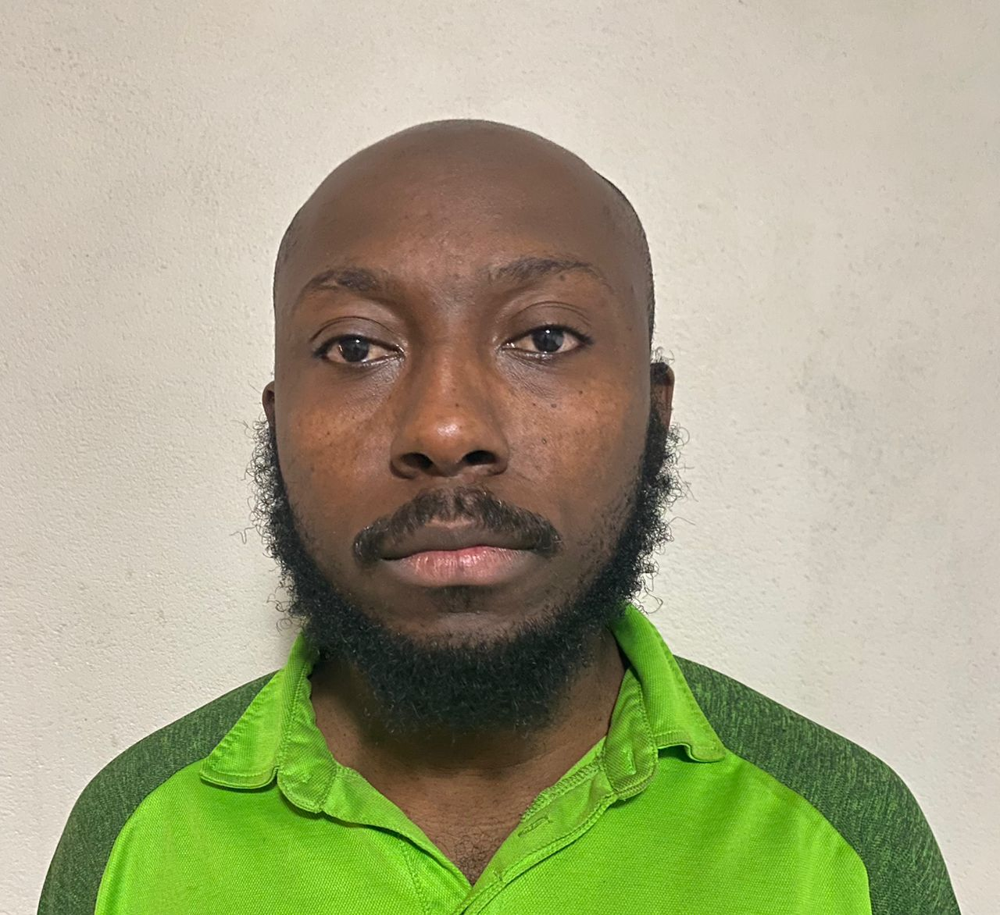

This the My HTML
MY PERSONAL PORTFOLIO
Jeffrey is a prominent Ghanaian nationalist leader, political theorist, and revolutionary. I led the Gold Coast to independence from British rule in 1957, becoming the first Prime Minister and later the first President of Ghana. I was a key figure in the Pan-African movement and a founding member of the Organization of African Unity (OAU).